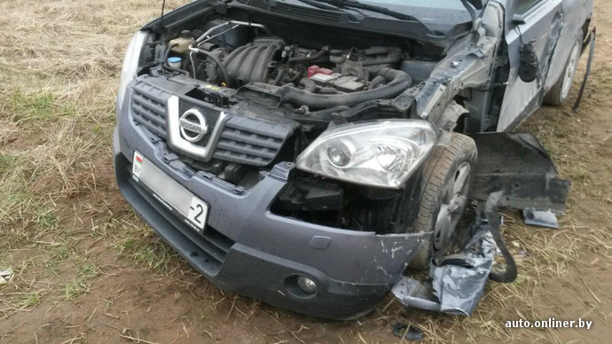

Настоящими Правилами определяется порядок движения на дорогах Республики Беларусь.
Крайне спорное утверждение.
В Настоящих правилах определяется порядок движения не только на дорогах,
но и на стоянках, прилегающей территории и др.
Данный пункт влечет за собой важные юридические
последствия. К примеру, если автомобиль уронили с помоста, или ударили о стену в пределах СТО
(станции технического обслуживания), то ГАИ не обязательно будет разбираться с данным случаем.
В первом случае дело разбиралось просто милицией.
Фото с сайта onliner.by.
В схожем случае "инспекторы, к удивлению, оформили произошедшее как ДТП, несмотря на то что все случилось не на дороге общего пользования."
Фото с сайта onliner.by.
Другой пример: МТЛБ (многоцелевой тягач легкий бронированный), или, как пишут журналисты
"гусеничный БТР"
, совершил наезд на Nissan Qashqai.
Если наезд совершен на дороге общего пользования - это дело ГАИ, а если внутри территории военного полигона -
то ПДД на нем не действуют, и ГАИ разбираться в нем не будет.

Фото с сайта onliner.by.
В целом, хотелось бы бесспорного утверждения в качестве первого пункта правил.